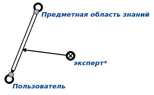

Команда назначения экспертом базы знаний предназначена для назначения пользователя экспертом* базы знаний. Единственным аргументом запроса является знак действие. назначить пользователя экспертом. Результатом выполнения запроса является назначение пользователя экспертом* базы зныний. Например:
